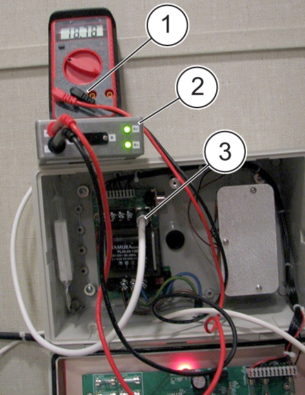

MRU Test
Prerequisites
Overview
The MRU tester can be used to verify performance of the MRU/ERU during the yearly MRU test. It will replace the resistor that is currently attached to terminal Strip TB2. The MRU tester will plug into connector J2 in the MRU. The MRU tester can also be plugged into the cable that connects to the magnet to verify continuity of the cable that runs between MRU and magnet.
1 Theory
The MRU tester consists of the following:
-
Resistor that simulates the load of the magnet heater (similar to the manual resistor).
-
Switch that allows you to toggle between heater circuit A and B.
-
LEDs that indicate voltage output to applicable heater (either A or B).
-
Jacks for voltmeter connections.
-
Cable to connect to MRU output.
-
Input for MRU cable that connects to the magnet.
The MRU tester can be used in place of the manual resistor that is currently referenced in the MRU vendor manuals. There is one resistor within the MRU tester. The switch will toggle between A and B MRU outputs. The jacks for the digital voltmeter (DVM) will provide the voltage output for either the A or B output, depending on the switch position. When the RUNDOWN button is depressed, the LEDs (both A and B) on the MRU tester should illuminate which indicates proper MRU output.
2 Testing MRU
Procedure
- notice
- note:Open MRU.
This process is used to replace the resistor test that is found in the MRU vendor manuals.
- Disconnect the 4 pin Limo cable P2 at J2 of MRU.
- Plug MRU tester cable J2 into MRU.
Figure 1. MRU Tester Connected to MRU

- Plug DVM into jacks of MRU tester. Check for proper voltage. Initial voltage should be zero VDC.
- With cable to magnet disconnected and MRU tester plugged into MRU, press the red quench or RUNDOWN button.
- Both LEDs on the MRU tester should light for a minimum of 30
seconds. The voltage should be approximately 20 VDC. This indicates
proper operation of the MRU. If only one of the LED lights up, troubleshoot
the problem.
Figure 2. MRU Tester Indicating Open Circuit

- Record voltages on PM forms for both A and B positions. The A/B switch can be toggled during the test to be able to record voltages for both A and B outputs. Eventually the RUNDOWN button will retract, at this time output voltage should be 0VDC.
- When complete, press the Reset button on the MRU. The Heater Activated LED should turn off. See applicable vendor manual for specific MRU to locate Reset button.
- notice
- Remove MRU tester and re-connect cable P2 into the MRU.
- Proceed to Finalization.
 |
|
3 Testing MRU Cable at Magnet
Procedure
- Disconnect the 5-pin Switchcraft connector P3 cable going into magnet.
- Connect this cable to J3 of the MRU tester.
Figure 3. MRU Tester Connected at Magnet

- Plug DVM onto jacks of MRU tester to check for proper voltage.
- notice
- With cable to magnet disconnected and MRU tester plugged into MRU, press the red Quench button. Record output voltage for both A and B circuits.
- Both LEDs on the MRU tester should light, which indicates:
-
Proper operation of the MRU
-
Proper operation of the cable between magnet and the MRU
note:There should be a 2.4 volt drop when measuring voltage at the magnet compared to measuring voltage at the MRU.
-
- When complete, press the Reset button on the MRU. See applicable vendor manual for specific MRU to locate Reset button.
- notice
- Reconnect cable at magnet.
- Proceed to finalization.
This process is only needed for troubleshooting, it is not needed for PM.
|
|
4 Finalization
Procedure
- Verify that any cable that was removed during testing has been re-connected and close MRU.
- Verify that there is continuity between the MRU and magnet by
performing a heater test:
- Press the Test Heater LED on the MRU. Verify the Heater Test
LED Illuminates.note:
Rapid movement or toggling of the Test Heater LED between the A and B position can cause the Heater Actuated LED to turn on.
- Move the test switch to position A, verify the Test Heater LED Illuminates.
- Move the test switch to position B, verify the Test Heater LED Illuminates
- Press the Test Heater LED on the MRU. Verify the Heater Test
LED Illuminates.